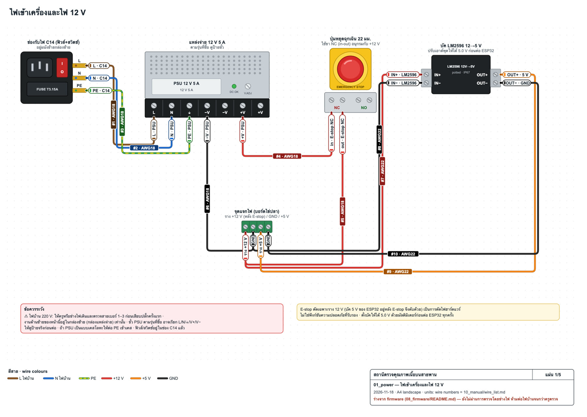
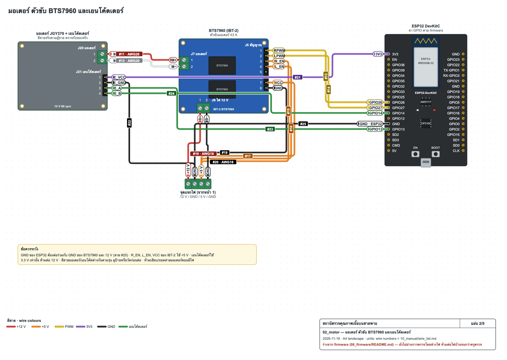
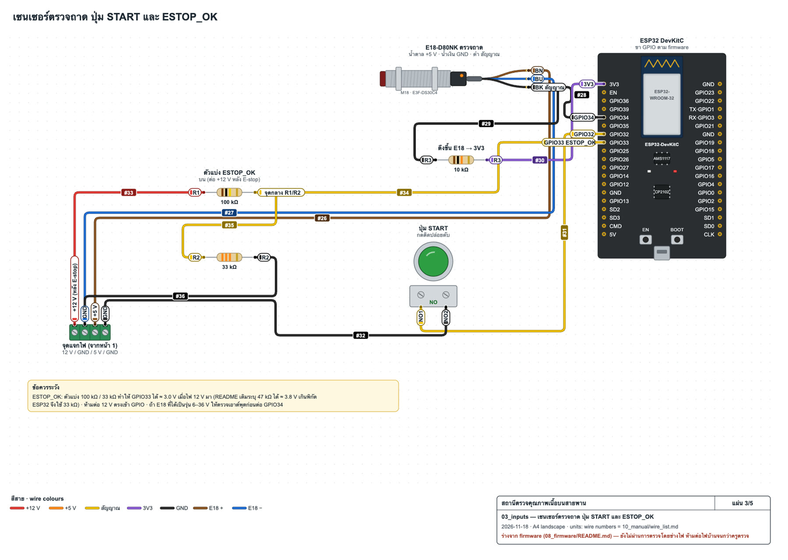
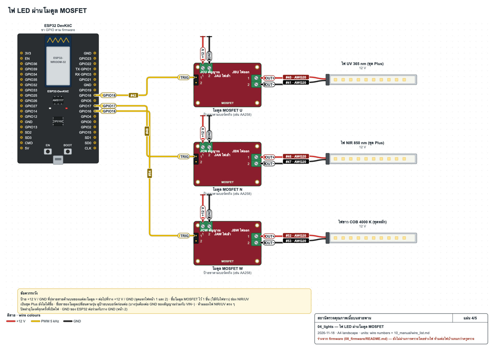
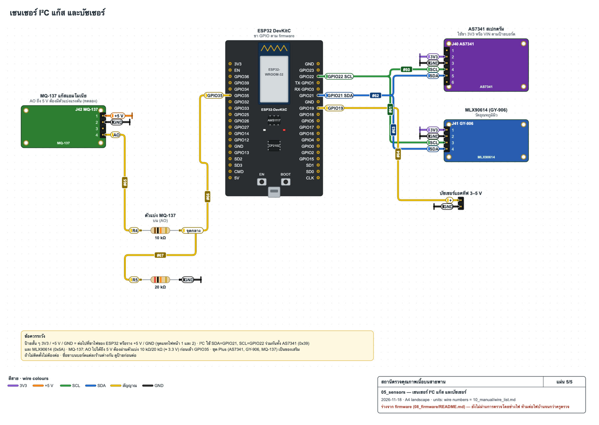

ภาพแบบบอร์ดจริง สายสี และเลขกำกับสาย 5 หน้า จาก firmware (ขา GPIO ตาม 08_firmware/README.md)

ช่องรับไฟ C14 → แหล่งจ่าย 12 V → ปุ่มหยุดฉุกเฉิน → บัค 5 V · ไฟบ้านต้องให้ครูหรือช่างไฟตรวจก่อนเสียบปลั๊ก

ESP32 สั่ง PWM เข้า BTS7960 ขับมอเตอร์ JGY370 และอ่านเอนโค้ดเดอร์ (ใช้ 3.3 V เท่านั้น)

ตัวแบ่งแรงดัน 100 kΩ / 33 kΩ ทำให้ขา GPIO33 ได้ ≈ 3.0 V ไม่เกินพิกัด

ไฟขาวชุดหลัก · NIR/UV เป็นชุด Plus

AS7341 + MLX90614 ใช้ SDA/SCL ร่วมกัน · MQ-137 ผ่านตัวแบ่งแรงดัน